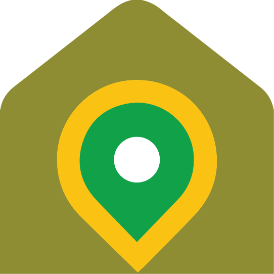

Ruta do pemento de Herbón
Mapa creado usando GPS Visualizer Programa de emprego Xuventude Terras de Iria 2023
Por favor, espera mentras se carga o mapa...
Datos da Ruta D Ruta do pemento de Herbón
- Dificultade técnica: Facil
- Distancia: 2 km
- Desnivel positivo: 36 m
- Altitude máxima: 40 m
- Altitude mínima: 5 m
- Tipo de roteiro: Circular
Símbolos no mapa
-  Inicio da ruta
-
 Fin da ruta
Fin da ruta
-
 Puntos de interese
Puntos de interese
Meteoroloxía na Ruta

Fonte de textos e imaxes: Terras de Iria 2020 | Concello de Padrón | Concello de Rois | Concello de Dodro | Obaixoulla.gal | Google Earth | OpenStreetMap